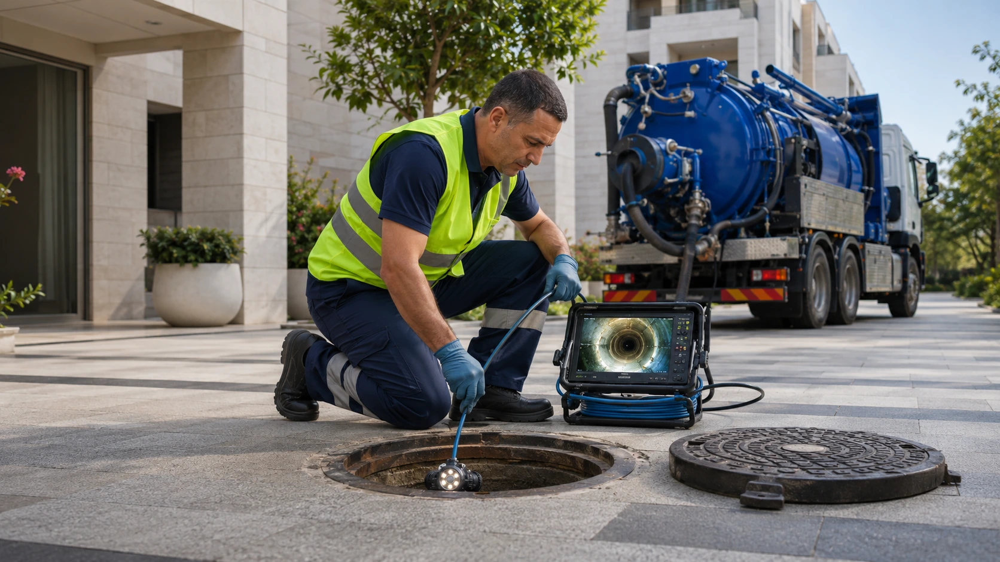

שירות מקומי עם ציוד מקצועי
ביובית בגבעתיים ובאזור המרכז
לתיאום הגעה וקבלת הערכה ראשונית חייגו 03-7219051
שירות מקומי עם ציוד מקצועי
לתיאום הגעה וקבלת הערכה ראשונית חייגו 03-7219051
סתימה שחוזרת, הצפה בחצר, בור ספיגה שהתמלא או ריח חריף מקו הביוב הם מצבים שדורשים טיפול מסודר ולא ניחושים. ביובית במרכז מספקת שירותי שאיבה, שטיפה וצילום קווים בגבעתיים וביישובים נבחרים באזור המרכז, עם התאמת הציוד למקום ולסוג התקלה.
אנחנו מתחילים בהבנת הבעיה, בודקים את תנאי הגישה ומסבירים מה נכון לבצע לפני שמתחילים בעבודה. המטרה שלנו היא לא רק לפנות את המים או הפסולת, אלא לזהות מה גרם לבעיה ולעזור לצמצם את הסיכוי שהיא תחזור. לשיחה עם הצוות חייגו 03-7219051.
ביובית במרכז נבנה כדי לתת מענה ברור לאנשים שמחפשים שירותי שאיבה, שטיפה וצילום קווי ביוב באזור המרכז. במקום להציע פתרון אוטומטי, אנחנו מתחילים בבירור סוג התקלה, מבנה הנכס ותנאי הגישה.
תהליך התיאום מחבר בין מידע שמתקבל מהלקוח לבין אנשי תפעול ושטח המתאימים לסוג העבודה. כך ניתן להיערך טוב יותר לבניינים צפופים, חניונים, חצרות פנימיות, בתים פרטיים ועסקים.
עוד עלינואנחנו מציעים שירותי ביובית ממוקדים לבתים, בניינים, עסקים, מסעדות, מוסדות ושטחים מסחריים.
ציוד מותאם לסוג העבודה, למבנה הקו ולתנאי הגישה בנכס.




מרכז הפעילות שלנו הוא גבעתיים, ומשם אנחנו יוצאים לשירות ברעננה, מודיעין, תל אביב, פתח תקווה, חולון, ראשון לציון ורמת גן. בכל אזור אנחנו מתאימים את סוג הרכב והציוד לתנאי הגישה, למבנה הקו ולסוג השאיבה הנדרשת.
זמני ההגעה משתנים לפי עומסי תנועה, זמינות הצוות וסוג העבודה. בשיחה הראשונית נבקש כמה פרטים פשוטים, כמו מיקום פתח הביוב, סוג הנכס והאם קיימת הצפה פעילה, כדי להיערך בצורה יעילה.
לכל אזורי השירותאנחנו לא מתחילים לשאוב או לשטוף באופן אוטומטי. קודם בודקים מה קורה, מה מקור התקלה ואיזה ציוד ייתן את התוצאה הנכונה.
לא בכל מקום ניתן להכניס משאית ביובית גדולה. במקומות צפופים או מוגבלים נבחן שימוש בביובית ניידת ובציוד קומפקטי.
אנחנו מסבירים מה מצאנו, מה אנחנו ממליצים לבצע ומה עלול לדרוש טיפול נוסף. כך אפשר לקבל החלטה בלי הפתעות מיותרות.
הצוות משתדל לצמצם לכלוך, ריחות והפרעה לדיירים או לעסק, ולסיים את העבודה כשהאזור מסודר ככל האפשר.
אנחנו מטפלים בבתים פרטיים, בניינים משותפים, מסעדות, חנויות, משרדים, מוסדות וחניונים.
כאשר קיימת הצפה, בור שהתמלא, סתימה עמוקה שאינה משתחררת באמצעים רגילים או צורך בשאיבת שפכים ושומנים. במקרים של תקלות חוזרות כדאי לשלב גם צילום קו.
כן. אנחנו עובדים מול ועדי בתים, חברות ניהול ודיירים, ויכולים לטפל בשאיבות, שטיפות קווים ובדיקת תקלות בצנרת המשותפת.
ביובית רגילה היא משאית עם מכל וציוד שאיבה ושטיפה. ביובית ניידת מתאימה יותר למקומות שבהם הגישה מוגבלת, כמו חניונים, סמטאות וחצרות פנימיות.
הצילום עצמו אינו פותח את הקו, אלא עוזר לזהות את מקור הבעיה. במקרים רבים מבצעים קודם ניקוי או שטיפה ורק לאחר מכן מצלמים את הקו.
אפשר לקבל טווח משוער לפי סוג העבודה, אך המחיר הסופי תלוי בנפח השאיבה, תנאי הגישה, אורך הקו, חומרת הסתימה והציוד הנדרש.
אנחנו פועלים בגבעתיים וביישובים נבחרים באזור המרכז, בהם רעננה, מודיעין, תל אביב, פתח תקווה, חולון, ראשון לציון ורמת גן.
ספרו לנו מה קורה בשטח ונעזור להבין איזה שירות מתאים.
ללא עלות וללא התחייבות